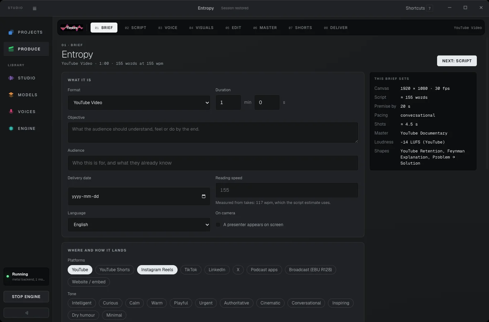
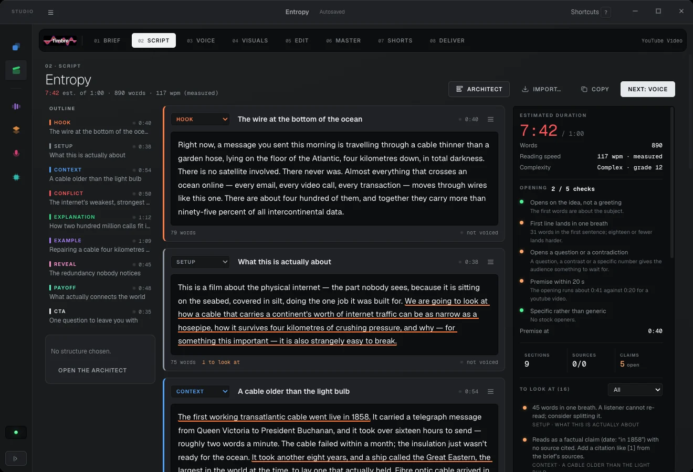
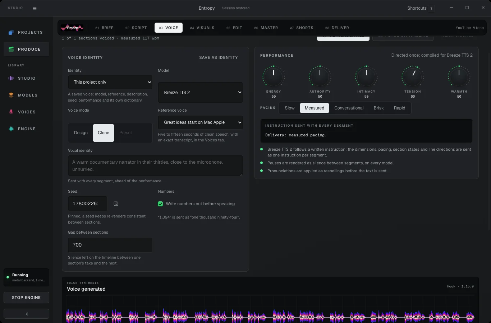
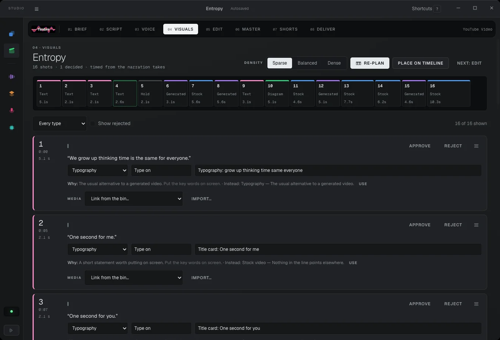
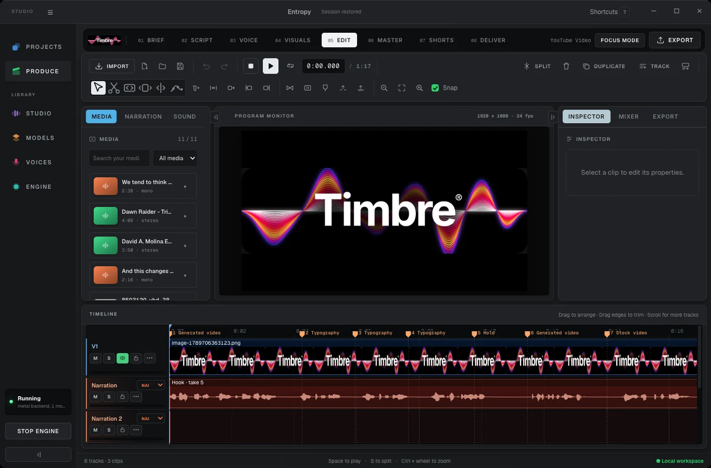
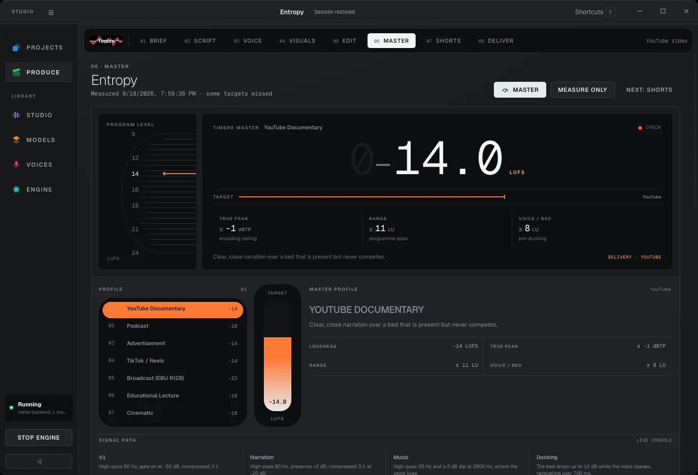
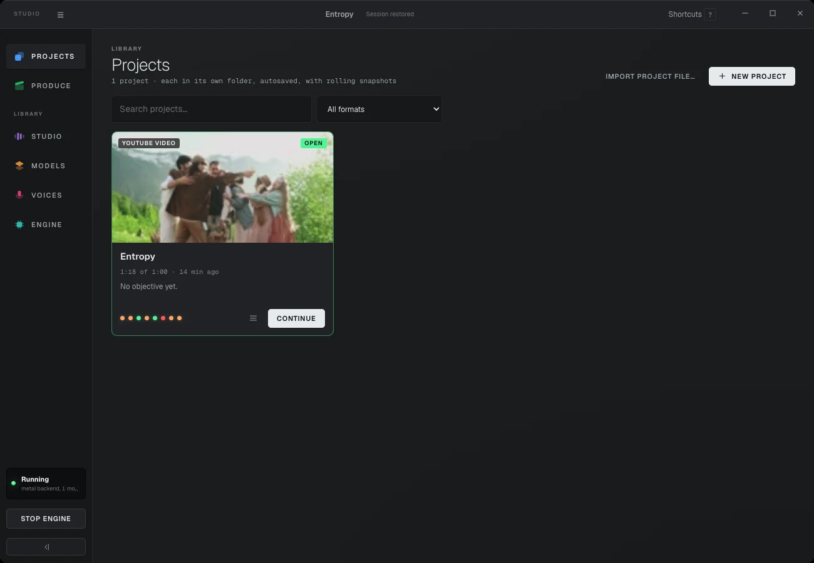
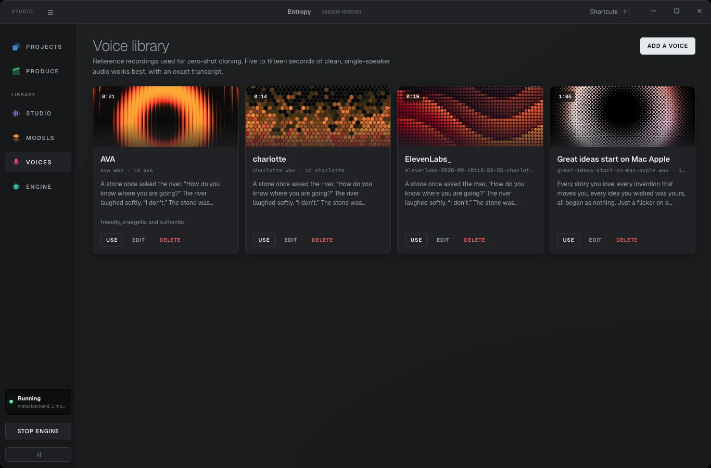
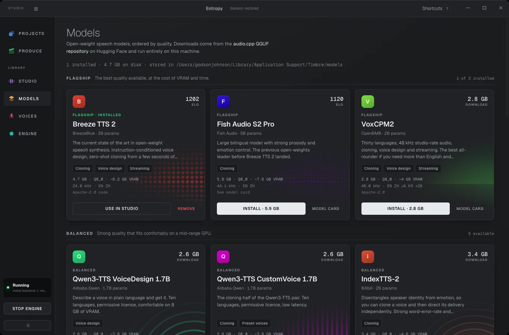

Local voice studio
Write the script, give it a voice, cut the video, and master it to the exact loudness the platform expects. Timbre runs open-weight speech models on your own computer — so there is nothing to subscribe to, no per-word billing, and nothing uploaded to anyone.
It is a studio for people who make things with a voice in them — explainers, documentaries, podcasts, ads, shorts. One window takes you from a blank page to a finished, correctly loud file.
Type a line and hear it read back in a voice you designed in words, cloned from a short recording, or picked from a model's own presets.
A real multi-track timeline. Cut, trim, crossfade, duck the music under the narration, draw volume by hand, drop in transitions.
It measures your mix the way YouTube and the broadcasters measure it, then tells you exactly what is off and fixes it on export.
The work, in order
Timbre lays the job out as a strip along the top of the window. You can jump around, but left to right is the order the work actually happens in — and each stage hands the next one what it needs.
01
What the piece is, who it is for, how long it runs, and where it is going. This is the only place you choose the platform — and that one choice sets the canvas, the reading speed, the loudness target and the export preset for everything downstream.

02
Write in sections — hook, point, turn, close — rather than one wall of text. Timbre counts your words against the duration you asked for and tells you, live, whether the script will actually fit the runtime. It measures your real reading speed from takes you have already made.

03
Pick the model, pick the voice, and direct the read. The performance knobs — energy, authority, intimacy, tension, warmth — are sent to the model as an instruction with every segment, so a change of direction is a change of performance, not a change of pitch. Pauses come out as real silence. Numbers are spoken as words.

04 · 05
Bring in footage and stills, and cut against the narration you just made. Split, trim, slip, slide, roll. Draw a fade by dragging a corner. Mark in and out and lift or extract the range. The music ducks under the voice automatically, and you can see the shape of that duck on the timeline.


06
This is the part most tools leave to you. Timbre measures the finished mix against the standard your platform actually uses, shows you the number, and says plainly what is wrong — too loud, too wide a range, music competing with the voice. Then it fixes it on export rather than making you guess.
There is also an optional insert rack for anyone who wants it: EQ, compression, limiting, reverb, and your own VST3 or Audio Unit plug-ins. Every processor draws its own response curve, so you can see what it is doing before you hear it.

07 · 08
Timbre transcribes the finished piece on your machine, finds the moments worth cutting, and crops them to a vertical frame with burnt-in captions. Then it exports — at the right size, the right frame rate and the right loudness for each place you said you were posting.

Voices
Add a short, clean recording of one person speaking and type out exactly what they said. That is a voice. From then on it reads anything you write, and it stays on your disk — no upload, no enrolment, no account.
You can also describe a voice in plain language and let the model build one, or use the preset voices a model ships with. Which of the three you get depends on the model; Timbre tells you which each one supports before you download it.
Clone only voices you have permission to use. Timbre keeps the description and credit you write next to every voice for exactly this reason.

Models
Fifteen open-weight models ship in the catalogue, ordered by quality and grouped by what they ask of your machine. Each card tells you the download size, the memory it needs, the languages it speaks and its licence — before you commit to the download.
Timbre warns you when a model is tight on memory for your machine, or when it would fall back to the processor and run slower than realtime. It would rather tell you first.

Why your videos sound quieter than everyone else's
YouTube, Spotify and the rest all measure how loud your piece is and normalise it to their own target. If you master too loud, they turn you down — and everything you gained by squashing it is lost, along with the dynamics. Timbre masters to the target instead.
Seven mastering profiles — documentary, podcast, advertisement, shorts, broadcast, lecture, cinematic — decide how the mix sounds. The platform you chose in the brief decides how loud it is delivered. Nothing is guessed: the moves come from measuring your actual stems.
Why local
Your script, your voice recordings and your footage stay on your disk. There is no account and no server to trust.
Re-record a line forty times if you want. There is no per-character cost, so you can afford to get it right.
Once the models are downloaded, Timbre needs no connection at all. Your studio does not stop when the wifi does.
Open weights on your own disk cannot be deprecated, rate-limited or repriced out from under a project you already shipped.
macOS on Apple Silicon or Intel, or Windows 10/11 on x64. Timbre is a desktop app — download it, open it, and it sets up its own speech engine on first run.
The smallest voice is 190 MB and runs comfortably on a processor. The flagship models want a graphics card with 6 GB or more. Start small; you can always download a bigger one later.
Timbre is free to use, under the MIT licence. Model weights carry their own licences, shown on every card before you download.
The macOS build is for Apple Silicon (M1 and later) — on an Intel Mac, get this build instead. Neither is signed yet, so the first launch needs one extra click: Control-click → Open on a Mac, or More info → Run anyway on Windows.